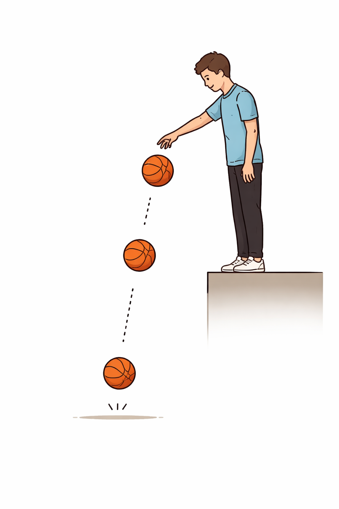
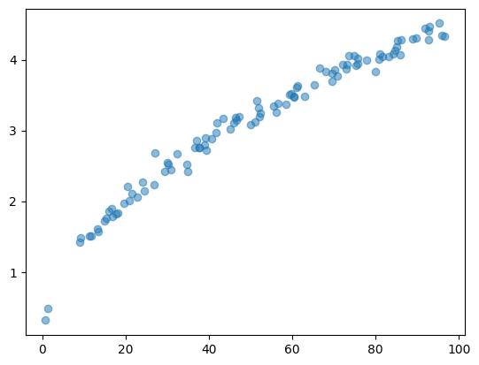
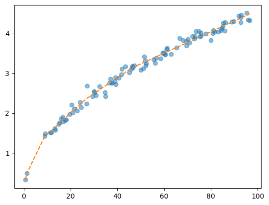

통계학과 소개
출석
우리학과 소개
- 학과소개영상: https://youtu.be/NKE9t0pkj5c?si=9R-8O7C9EFLiVn-L
- 학과자랑:
통계학과는 학생들이 전공을 깊이 이해하고 실무 역량을 키울 수 있도록 다양한 지원을 제공합니다. 고성능 GPU 서버를 포함한 데이터 분석 인프라가 구축되어 있어 최신 머신러닝 및 빅데이터 분석 기술을 실습할 수 있으며, 빅데이터 혁신공유대학 사업에 선정되어 관련 교육과 연구 기회도 풍부합니다. 또한, 국민연금공단, 통계청등 과 협력한 견학 프로그램을 통해 학생들은 실제 데이터 분석이 산업과 공공 부문에서 어떻게 활용되는지 경험할 수 있습니다. 이외에도 진로 캠프, 비교과 프로그램, 방학 중 SPSS/R 및 리눅스 서버 활용 특강 등 다양한 학업 및 실무 지원 프로그램이 운영됩니다.
대학 및 연구활동
학과에서는 학생들이 연구 활동을 할 수 있도록 다양한 기회를 제공합니다. 학부 연구생 프로그램을 통해 교수님과 함께 연구 프로젝트에 참여할 수 있으며, 연구 과정에서 실무적인 문제 해결 능력을 키울 수 있습니다. 또한, 학생들은 데이터 분석 경진대회에 참가하여 실제 데이터를 활용한 문제 해결 경험을 쌓을 수 있습니다. 캡스톤 디자인 프로젝트에서는 실무 프로젝트를 수행하며, 졸업 후 현장에서 적용 가능한 경험을 쌓을 수 있습니다.
대학생활
- 학기 중 운영되며, 졸업생이 후배들에게 진로 경험을 공유하는 졸업생 특강과 학생들의 진로 탐구 발표가 이루어짐
- 또한, 이 과정에서 학생들 간의 교류가 활발히 이루어지며, 졸업생과 재학생이 자연스럽게 소통할 수 있는 기회가 됨.
- 데이터 분석 및 실무 역량 강화를 위해 교내 전임교원으로 구성된 통계교육원에서 SPSS/R 및 텍사스 서버 활용 교육을 제공
- 이를 통해 학생들은 데이터 분석 및 서버 환경에서의 기술을 효과적으로 습득할 수 있음.
- 학과에서 운영되는 스터디 카페에서 학생들이 자율적으로 전공과목을 공부하고 자격증을 준비.
- 필요에 따라 프린터 등 다양한 학술 인프라도 활용할 수 있음.
- 선배들이 함께 스터디를 운영하기도 하며, 자발적 멘토링이 이루어지기도 함.
- 현실 문제 해결 경험을 쌓고 취업 역량 강화를 위해, 학술 공모전과 대회에 참가하는 학생들이 많으며 교수님들과 함께 해결방안을 모색하면서 실무감각을 익힘.
- 이 과정을 통해 학생들은 창의적인 문제 해결 능력을 기를 뿐 아니라 실전에 활용 가능한 지식을 익히게 됨.
통계학이란?
통계학은 한 줄로 말하면 “데이터를 통해 세상을 이해하고 의사결정을 돕는 학문”입니다. (ChatGPT)
통계학이란 답이없는 세상에서 답을 내려주는 학문이라 생각합니다. (제 생각)
- ref: https://blog.naver.com/lovelylau/110134472166
- ref: https://m.blog.naver.com/sheepfarmer/110101515023
아래에는 당신이 조직생활에서 겪을 수 있는 상황들과 그러한 상황들에서 당신이 취할 수 있는 행동들이 제시되어 있습니다. 각각의 상황들을 자세히 읽고, 당신이 생각하기에 각 대안적 행동들이 얼마나 바람직한지 다음의 보기와 같이 답해 주시기 바랍니다.
예) 옆자리에 근무하는 동료가 업무 시간에 자꾸 잡담을 건다.
전혀 바람직하지 않다 ① ② ③ ④ ⑤ ⑥ ⑦ 매우 바람직하다
- 그러지 말라고 주의를 준다 ① ② ③ ④ ⑤ ⑥ ⑦
당신이 위에 제시된 상황에서 동료에게 업무 시간에 잡답을 걸지 말라고 주의를 주는 것이 ’바람직하다’고 생각되면 물론 ⑦번 방향으로, ’바람직하지 않다’면 ①번 방향으로 답하시면 됩니다. 예시한 ⑤의 경우는 ’매우 바람직하지는 않지만 약간은 바람직한 대응 행동’이라고 판단한 경우입니다. (각 상황마다 주어진 대안 행동 모두에 응답하여야만 하고, 한 문항도 빠짐없이 응답하여야 합니다.)
【상황1】 여자친구와 보고 싶어하던 연극 티켓 2장을 간신히 구했다. 막상 출발하려는데, 갑자기 중요한 프로젝트가 생겨서 팀원 전원의 야근을 해야 한다. 당신은 어떻게 하겠습니까?
전혀 바람직하지 않다 ① ② ③ ④ ⑤ ⑥ ⑦ 매우 바람직하다
A. 팀장님께 양해를 구하고 보러간다. ① ② ③ ④ ⑤ ⑥ ⑦
B. 여자친구에게 표를 주고 다른 사람과 가라고 한다. ① ② ③ ④ ⑤ ⑥ ⑦
C. 표를 환불하고 다른 날로 예매한다. ① ② ③ ④ ⑤ ⑥ ⑦
D. 연극을 보고 돌아와 남들보다 더 늦게까지 일한다. ① ② ③ ④ ⑤ ⑥ ⑦
E. 여자친구와 잠깐 만나 연극 대신 저녁을 먹는다. ① ② ③ ④ ⑤ ⑥ ⑦
F. 옆 팀 동료에게 표를 판다. ① ② ③ ④ ⑤ ⑥ ⑦
G. 여자친구에게 미안하다고 말하고 일에 전념한다. ① ② ③ ④ ⑤ ⑥ ⑦
통계학과 특징
- 대한민국 국가데이터처: https://www.youtube.com/watch?v=V_fpYqmRpM8
- 연고티비: https://www.youtube.com/watch?v=Ln4zqgl-ueY
- 미미미누: https://www.youtube.com/shorts/eN87HpMNRNo
- 미생: https://www.youtube.com/watch?v=d3OY6LyZ-cg
- 통계학과출신이 가지는 이미지 (혹은 편견)
- 문과? 이과?
- 만능? 수학도 잘하고 컴퓨터도 잘하고 경제감각도 있고..
- 나를 잘 지원해주는 동료?
- 독설가?
통계학과, 물리학과, 반도체과학기술학과
반도체과학기술학과와 통계학과
- 팹리스 vs 팹
- 하이주니어
물리학과와 통계학과
- 질문: 높이 \(h=30\) 에서 공을 떨어뜨리면 몇 초만에 땅으로 떨어질까요?

자, 공기저항은 무시할 수 있다고 가정하죠.
물리학에는 자유낙하 공식이 있습니다.
\[h = \frac{1}{2} gt^2 \quad \Leftrightarrow \quad t = \sqrt{\frac{2h}{g}}\]
여기서 \(g \approx 9.8 \, m/s^2\) 이니까, 위의 식에 \(h=30\)을 대입하면
\[t = \sqrt{\frac{2 \times 30}{9.8}} \approx 2.47\]
입니다.
저는 공식은 모르지만, 직접 다양한 높이에서 공을 떨어뜨려 봤습니다. 실험 결과를 그림으로 그려보면 이렇습니다.

데이터의 패턴을 보니까, \(h=30\)일 때 대략 \(t \approx 2.5\)초 정도 되는 것 같습니다.
저는 저 데이터로 딥뉴럴네트워크를 적합해봤습니다.
- 아키텍처: 히든레이어 3개, 노드 수 어쩌고..
- 에폭: 500, 학습률: 0.001 어쩌고..

주황색 점선이 예측선입니다. \(h=30\)을 넣으면 \(t \approx 2.4901\)초가 나옵니다.
같은 통계학과, 다른 진로
- 같은 통계학과이지만, 서로 다른 진로를 가질 수 있어요.
- 회사: XX은행, XX보험, XX증권 // 한국은행, 금융감독원, 한국거래소
- 하는일: 리스크 분석, 보험 계리, 투자 전략 수립 등등..
- 회사: 병원, XX제약
- 하는일: 임상자료 분석, 질병 예측 모델링, 생물통계연구
- 회사: 삼성전자/LG전자, 하이닉스, 현대자동차,
- 하는일: 품질관리, 생산 공전 최적화, 스마트 팩토리
- 회사: 네이버, 카카오, 라인
- 하는일: 데이터 분석, AI 모델 개발, 머신러닝 기반 솔루션
- LG-CNS, 삼성SDS, 베가스
- 하는일: 데이터 기반 전략 수립, 시스템 구축, AI 솔루션 제안
- 통계청, 농진청, 국민연금, 기상청, 한국전력 ..
- 하는일: 정책 수립, 통계 조사, 국가 데이터 분석 프로젝트
- 통신사: SKT, KT, LGU+
- 게임회사: 위메이드 폭스, 넷마블, 엔씨소프트
- 기타: Bell Labs, 삼성전자 인사팀, 한국스마트카드
- 심지어 같은 회사에 간다고 해도..